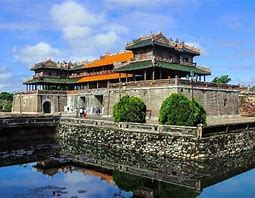
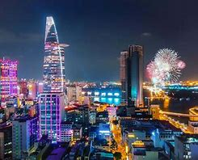

Huế là thành phố tỉnh lỵ nằm ở trung tâm của tỉnh Thừa Thiên Huế. Qua nhiều giai đoạn phát triển từ Thủ phủ, Đô thành, Thị xã cho đến thành phố, Huế vẫn luôn là trung tâm quan trọng của đất nước về nhiều mặt như chính trị, văn hóa - du lịch, giáo dục - đào tạo, khoa học kỹ thuật,...Thành phố Huế có 36 đơn vị hành chính bao gồm 29 phường và 7 xã, là thành phố có nhiều đơn vị xã nhất Việt Nam. Nền kinh tế tại
Năm 1698, Chúa Nguyễn cử Thống soái Nguyễn Hữu Cảnh vào kinh lược đất Phương Nam, khai sinh ra thành phố Sài Gòn. Vào ngày 5 tháng 6 năm 1911, từ Bến Nhà Rồng, người thanh niên Nguyễn Tất Thành ra đi tìm đường cứu nước. Sau khi đất nước thống nhất, Sài Gòn được đổi tên thành . Với hơn 300 năm hình thành và phát triển, thành phố có rất nhiều công trình kiến trúc cổ, .
Hà Nội là trung tâm văn hoá, chính trị, thương mại và du lịch quan trọng của cả nước. Với lịch sử Hà Nội nghìn năm văn hiến, nơi đây đã và đang trở thành điểm đến nổi tiếng toàn cầu. Thành phố có hơn 4.000 đài tưởng niệm và cảnh quan đẹp, trong đó có hơn 900 di tích được xếp hạng quốc gia, song song là hệ thống bảo tàng quy mô lớn cùng với các công trình kiến trúc độc đáo và đa dạng.